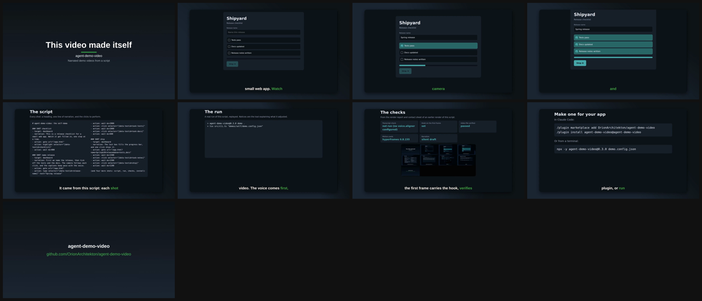

Every shot: a heading, one line of narration, and the clicks to perform.
# agent-demo-video: the self-demo ### SHOT checklist - target: dashboard - narration: This is a release checklist for a small web app. Watch it get filled in, one step at a time. - action: goto url="/app.html" - action: highlight selector="[data-testid=checklist]" - action: wait ms=800 ### SHOT name-release - target: dashboard - narration: First we name the release, then tick off the tests and the docs. The camera follows each click, and the captions keep pace with the voice. - action: goto url="/app.html" - action: type selector="[data-testid=release-name]" text="Spring release" - action: wait ms=2000 - action: click selector="[data-testid=task-tests]" - action: wait ms=2000 - action: click selector="[data-testid=task-docs]" - action: wait ms=600 ### SHOT ship - target: dashboard - narration: The last box fills the progress bar, and one click ships it. - action: goto url="/app.html?name=Spring%20release&done=tests,docs" - action: wait ms=1500 - action: click selector="[data-testid=task-notes]" - action: wait ms=1500 - action: click selector="[data-testid=ship]" - action: wait ms=1200 (and four more shots: script, run, checks, install)
A real run of this script, replayed. Notices are the tool explaining what it adjusted.
> agent-demo-video@0.3.0 demo .> tsx src/cli.ts "<tmp>/self-narrated.json"[agent-demo-video] shot "checklist": prebaked clip (5.73s) is shorter than its narration (5.76s); froze the last frame to extend it to 5.80s so the voiceover is not truncated.[agent-demo-video] shot "script": prebaked clip (6.80s) is shorter than its narration (6.84s); froze the last frame to extend it to 6.87s so the voiceover is not truncated.[agent-demo-video] shot "run": prebaked clip (7.87s) is shorter than its narration (7.92s); froze the last frame to extend it to 7.97s so the voiceover is not truncated.[agent-demo-video] shot "install": prebaked clip (7.17s) is shorter than its narration (7.20s); froze the last frame to extend it to 7.23s so the voiceover is not truncated.✓ wrote <tmp>/final.mp4 (60.3s, 9 segments)
From the render report and contact sheet of an earlier render of this script.

In Claude Code:
/plugin marketplace add OrionArchitekton/agent-demo-video /plugin install agent-demo-video@agent-demo-video
Or from a terminal:
npx -y agent-demo-video@0.3.0 demo.config.json